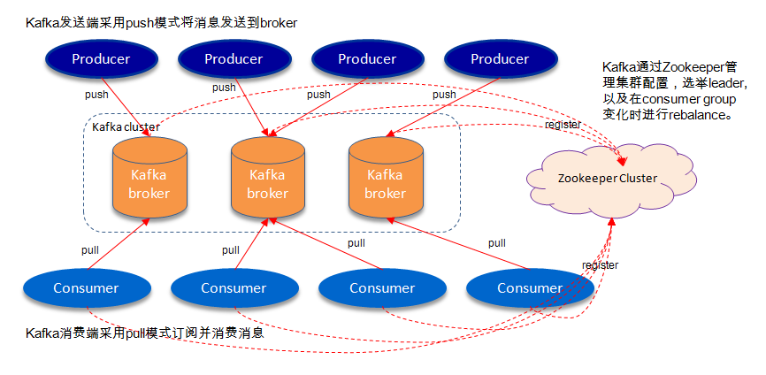

Kafka理论之Partition & Replication
基于分区和副本集的相关知识，初步了解Kafka的数据存储、同步原理
Kafka基本架构

此图来源于朱小厮博客
上图为Kafka的典型架构图，对于消息的生产以及消费逻辑不在本文的讨论范畴，主要就Broker的数据存储做以浅显的总结。首先解释一下常见的相关专业术语：
Broker：消息中间件处理节点；每个Kafka服务节点称之为一个Broker，一个Kafka集群由一个或多个Broker组成
Topic：一类特定数据集合的统称；可类比DB中Table的概念；逻辑概念
Producer：消息的生产者，向Broker发送消息的客户端
Consumer：消息的消费者，向Broker读取消息的客户端
Consumer Group：每一个Consumer隶属于一个特定的Consumer Group，一条消息可以被不同Group中的Consumer消费，但同一Group内的消息只能被一个Consumer消费
Partition：是对Topic中所包含数据集的物理分区；物理概念
Replication：副本集；是Kafka高可用的一种保障机制
Partition & Replication
概述
Partition(分区)
Partition是作用于具体的Topic而言的，而不是一个独立的概念。Partition能水平扩展客户端的读写性能，是高吞吐量的 保障。通俗的将，Partition就是一块保存具体数据的空间，本质就是磁盘上存放数据的文件夹，所以Partition是不能跨Broker存在，也不能在同一个Broker上跨磁盘。对于一个Topic，可以根据需要设定Partition的个数；Kafka默认的Partition个数num.partitions为1($KAFKA_HOME/config/server.properties)，表示该Topic的所有数据均写入至一个文件夹下；用户也可以在新建Topic的时候通过显示的指定--partitions <integer>参数实现自定义Partition个数。在数据持久化时，每条消息都是根据一定的分区规则路由到对应的Partition中，并append在log文件的尾部(这一点类似于HDFS)；在同一个Partition中消息是顺序写入的且始终保持有序性；但是不同Partition之间不能保证消息的有序性(高吞吐量的保障)。
Kafka也支持动态增加一个已存在Topic的Partition个数，但不支持动态减少Partition个数。因为被减少Partition所对应的数据处理是个难题；由于Kafka的数据写模式的限制，所以如果要把这些Partition的历史数据集追加到有效的Partition的尾部，就会破坏了Kafka在Partition上消息的有序性，显然是不合理的；但如果按照时间戳重新构分区的数据文件，可操作性和难度都将是非常大的，所以目前并不支持动态减少Partition个数。
Partition是用来存储数据的，但并不是最小的数据存储单元。Partition下还可以细分成Segment，每个Partition是由一个或多个Segment组成。每个Segment分别对应两个文件：一个是以.index结尾的索引文件，另一个是以.log结尾的数据文件，且两个文件的文件名完全相同。所有的Segment均存在于所属Partition的目录下。
Segment的必要性：如果以partition作为数据存储的最小单元，那么partition将会是一个很大的数据文件，且数据量是持续递增的；当进行过期数据清理或消费指定offset数据时，操作如此的大文件将会是一个很严重的性能问题。
Replication(副本集)
Replication是Kafka架构中一个比较重要的概念，是系统高可用的一种保障。Replication逻辑上是作用于Topic的，但实际上是体现在每一个Partition上。例如：有一个Topic，分区(partitions)数为3(分别为a, b, c)，副本因子(replication-factor)数也为3；其本质就是该Topic一共有3个a分区，3个b分区，3个c分区。这样的设计在某种意义上就很大程度的提高了系统的容错率。接着上述的例子想另外一个问题：一个Topic下a分区一共有三个，既然是副本集，那这三个所包含的数据都完全一样吗？作用都一样吗？说到这就不得不引出两个概念：
Leader Replica
概念：每一个Partition有且只有一个Replica可以作为Leader
职责：负责处理所有Producer、Consumer的请求；与此同时，Leader还负责监管和维护ISR(In-Sync Replicas：副本同步队列)中所有follower的滞后状态。
Follower Replica
概念：每个Partition中除了Leader以外的所有Replica均为follower
职责：不处理任何来自客户端的请求；只通过Fetch Request拉取leader replica的数据进行同步
tips: leader partition(主分区) & leader replica(主副本集)：其实这两个概念是一回事；因为副本集策略只是一种机制，是为了提高可用性而生的。这种策略就是作用于partition上的，通俗的说增加副本集个数其实就是增加同一个partition的备份个数；同样的对于主分区而言，就是同一个partition下所有备份中的主副本集。
注意：同一个topic下的不同partition之间是没有主次之分，都是同等重要且存储不同数据的。
命名规则 & 数据存储
Partition
当新建一个topic，并指定partition个数后，会在log.dirs参数($KAFKA_HOME/config/server.properties)所指定的目录下创建对应的分区目录，用来存储落到该分区上的数据。分区目录的命名格式为：topic名称 + 短横线 + 分区序号；序号默认从0开始，最大为分区数 - 1。
为了尽可能的提升服务的可用性和容错率，Kafka遵循如下的分区分配原则：
所有的replica要尽可能的平均分配到集群中的每一台broker上
尽可能保证同一个partition的leader和follower分在不同的broker上
如果集群跨机架，尽可能的保证每个partition的replica分配到不同的机架上
Eg：集群中有四个节点，均在统一机架上，新建一个topic：demoTopic，指定分区个数为4，副本因子为3；则对应的partition目录分别为：demoTopic-0、demoTopic-1、demoTopic-2、demoTopic-3；具体如下图所示：
因为集群未跨机架，所以在这里主要验证一下前两条分区分配原则：四个主分区分别位于四个不同的broker上，且另外两个replica也随机分配到除leader所在节点以外的其他三个broker上；具体的分区分布图如下所示：

Segment
每个Partition全局的第一个Segment文件名均是从0开始，后续每个Segment的文件名为上一个Segment文件中最后一条消息的offset值；数据的大小为64位，20位数字字符的长度，未用到的用0填充。同一个Segment的.index文件和.log文件的文件名完全相同；所以初始化每个Partition下的Segment的文件名如下所示：
这种命名格式的好处在于可以有效的规避单文件数据量过大导致的操作难问题，不仅如此，还可以方便、快速的定位数据。例如：要实现从指定offset处开始读取数据，只需要根据给定的offset值与对应Partition下的segment文件名所比对，就可以快速的定位目标数据所在的segment文件，然后根据目标segment的.index文件查找给定offset值所对应的实际磁盘偏移量，即可快速在.log中读取目标数据。
Kafka中所说的Offset本质上是一个逻辑值，代表的是目标数据对应在Partition上的偏移量；而数据在磁盘上的实际偏移量是存储在对应Segment的.index文件中。数据同步
通过简单介绍replica之间的offset的变化和更新逻辑，来初步了解Kafka的数据同步机制。首先引入几个概念：
Offset相关概念
LEO(LogEndOffset)：表示每个Partition中log最后一条message的位置
HW(HighWatermark)：表示Consumer能够看到该Partition的位置
Replica相关概念
ISR(In-Sync Replicas)：副本同步列表【包含Leader和Follower】
OSR(Outof-Sync Replicas)：由于同步落后而被剔除的副本列表，阈值参数：replica.lag.time.max.ms
AR(Assigned Replicas)：所有副本集；AR = ISR + OSR
清楚LEO、HW和ISR之间的相互关系是了解Kafka底层数据同步的关键：Kafka取Partition所对应的ISR中最小的LEO作为整个Partition的HW；每个Partition都会有自己独立的HW，与此同时leader和follower都会负责维护和更新自己的HW。对于leader新写入的消息，Consumer不能立刻被发现并进行消费，leader会等待该消息被ISR中所有的replica同步更新HW后，此时leader才会更新该partition的HW为之前新写入消息的offset，此时该消息对外才可见。LEO和HW的转化逻辑如下图所示：

图片来自于朱小厮博客
可用性 & 一致性
在分布式架构中，服务的可用性和数据的一致性是一个绕不开的话题，Kafka也不例外。如上文所说：当leader接受到一条消息后，需要等待ISR中所有的replica都同步复制完成以后，该消息才能被消费。如果在同步的过程中，ISR中如果有follower replica的同步落后延迟超过了阈值，则会被leader从ISR中剔除；只要ISR中所有的replica均同步成功，则该消息就一定不会丢失。从数据的角度出发，这种方式很契合一致性的需求，但是当集群的节点数较多，ISR队里的副本数变大时，每条消息的同步时长可能并不是所有业务场景所能容忍的，所以Kafka在Producer阶段通过request.required.acks参数提供了不同类型的应答机制以方便用户在系统吞吐量和一致性之间进行权衡：
1(Default)：表示Producer在ISR中的Leader成功接收到消息后并确认后，则代表该消息以成功写入
0：表示Producer将消息发送到Broker中后无需等待Broker的确认；即就是：只管发消息，不关注消息是否被成功接收
-1(all)：表示Producer需要等待ISR中所有的Replica都确认收到消息才算写入成功；如果ISR中只剩下Leader，则等通过request.required.acks=1的效果
在老版本的Kafka(0.11.0.0以前)中，存在一个潜在的数据一致性问题：假如一个Partition有两个Replica，A(Leader)中包含的数据为a, b, c, d, e，LEO为5；B(Follower)包含的数据为a, b, c，LEO为3；此时该Partition的HW为3，Consumer可见的消息为a, b, c，系统对外表示正常；当follower还未来得及同步消息d、e时，leader挂了，此时B变成Leader，并且Producer重新发了两条消息f和g；因为此时系统中只有B一个存活，所以Partition对外的HW这会更新为5没有问题，Consumer可见的内容为a, b, c, f, g；此时A被唤醒并作为Follower开始从Leader中拉取数据，因为follower自身的HW等于Leader的HW，所以B没有拉去到任何数据，当Producer继续发送消息时，就会导致副本A、B的数据集不一致。这个问题在0.11.0.0中通过leader epoch机制来消除该问题。可以把epoch理解为代(版本)的概念，即每一次的leader对应一个唯一的epoch，如果leader更换，则对应的epoch值也会随之更换，而过期的epoch请求则都会被忽略。
更多关于Kafka High Watermark可详见huxi博客
本文参考文献